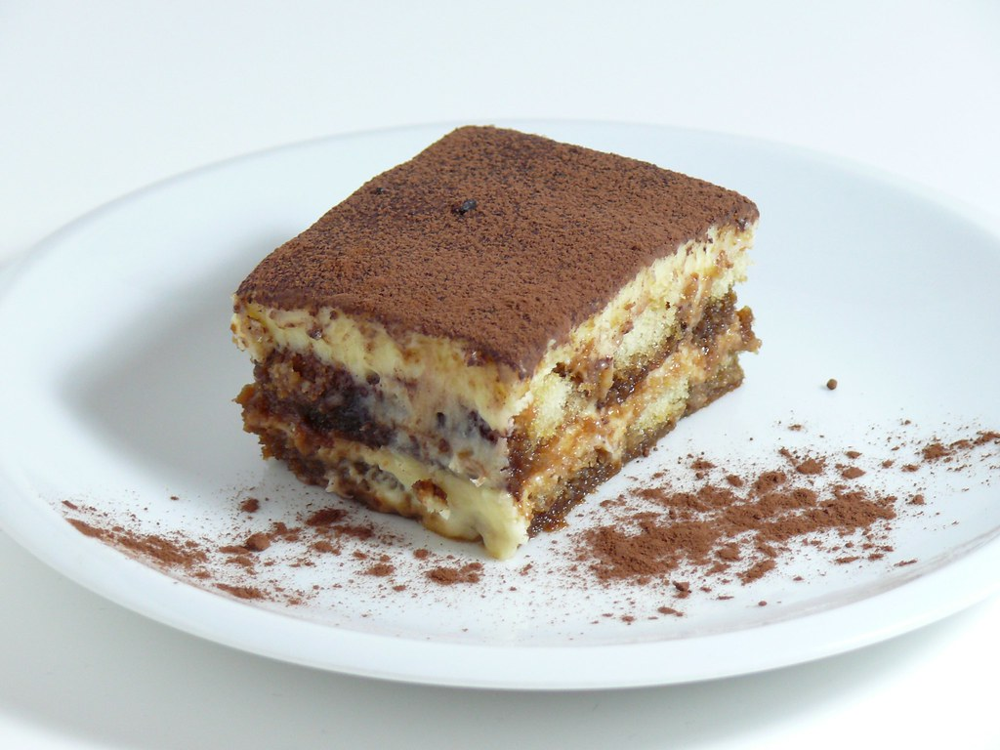

Tiramisù

Description
Tiramisù is a delicious Italian dessert made with ladyfingers soaked in
coffee, mascarpone cheese, and cocoa powder.
Ingredients
- 300 g of ladyfingers
- 500 g of mascarpone
- 4 fresh eggs
- 100 g of sugar
- 300 ml of cold espresso coffee
- Unsweetened cocoa powder
- A pinch of salt
Steps
-
Separate the egg yolks from the whites. Beat the yolks with the sugar
until the mixture is light and fluffy. Add the mascarpone and mix well.
-
Beat the egg whites with a pinch of salt until they form stiff peaks,
then gently fold them into the mascarpone mixture.
-
Quickly dip the ladyfingers into the cold coffee and arrange them in a
baking dish to form an even layer. Cover with a layer of mascarpone
cream. Repeat the process until all the ingredients are used, finishing
with a layer of cream.
-
Dust with unsweetened cocoa powder and let it rest in the refrigerator
for at least 3 hours before serving.
Spaghetti alla carbonara
Risotto alla milanese